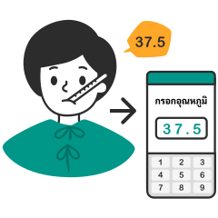

คู่มือการใช้งานสำหรับผู้ป่วย
อัพเดตล่าสุดเมื่อ 08/04/2563
1. เข้าสู่ระบบ

สแกนคิวอาร์โค้ด หรือ ใส่รหัส ประจำตัวผู้ป่วยของคุณเพื่อเข้าสู่ระบบ
2. เช็คตารางประจำวัน

คนไข้ เช็คเวลาตรวจร่างกาย ด้วยตนเอง 6 รอบ/วันตามเวลา
3. เริ่มตรวจตามขั้นตอน

ตรวจร่างกายเบื้องต้นด้วยตนเอง และ กรอกข้อมูลให้ครบ
*โปรดระบุข้อมูลให้ถูกต้องเนื่องจากข้อมูลมีผลต่อการวินิจฉัย
4. ส่งข้อมูล

เมื่อกรอกข้อมูลเสร็จเรียบร้อย ข้อมูลของคุณจะถูกส่งไปถึงพยาบาลโดยตรง กรุณากลับมาให้ข้อมูลอีกครั้งเมื่อถึงรอบตรวจถัดไป